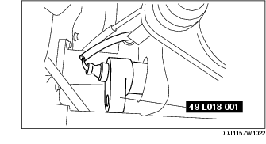

Rear heated oxygen sensor (HO2S) removal/installation [ZY]
1. Disconnect the negative battery cable.
2. Perform the following procedure for easier access.
- (1) Remove the air cleaner cover. (See INTAKE-AIR SYSTEM REMOVAL/INSTALLATION [ZY].)
3. Install the SST to the rear HO2S.

4. Remove the rear HO2S.
5. Install in the reverse order of removal.